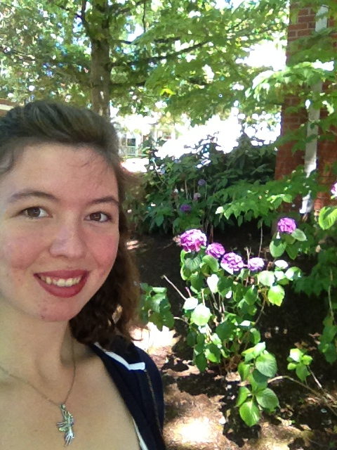

Welcome. First, a brief introduction of myself.
I am a junior at the U of O, and am currently a Japanese and International Studies double major, with a CIT minor. Born and raised in Portland, I completely identify as an Oregonian. I love the rain and the outdoors. I try to get out to the blustery, grey Oregon coast at least twice a year, where my dog and I roam the beach searching for treasures. As far as future plans, mine are still rather vague. I would love to use Japanese and Korean in my job, and ideally would be working in some sort of international setting that would allow me to utilize my computer skills as well. I'm really looking forward to this term and am excited to become more knowledgeable about Unix and Javascript!
Bicycling
One of my great loves is bicycling. To me, a wonderful, sunny Saturday is best spent biking rails to trails to Vernonia. With a little picnic in tow and some company to enjoy the ride with, what could be better? As a Portlandian who loves biking, naturally I participate in the Bridge Pedal every year. To further my bike knowledge, I have taken courses on bike maintenance, and look forward to future bike trips!
Have you read...?
Who doesn't love books? In my opinion, there is a book for everyone. No matter your interests, there is always something for you. Especially at Portland's largest bookstore Powells. Taking up a whole city block, I could spend hours in Powells, getting lost in the stacks, paging through novels and thrillers, autobiographies and sci-fi books. Well aware of my weakness to books, I usually bring a friend along to make sure I don't buy every book in the store. Books are often thought of as a solitary pasttime, but I beg to differ. You can read books aloud, discuss plot lines and characters at length, and simply connect through the recommendation of books one has yet to read, or the realization that you both have read and love the same books.
Dogs vs. Cats
I am undeniably a dog person. Sure, I like cats well enough, but having been raised with dogs, they hold a dearer place in my heart. I have a ten-year-old golden retriever named Coco, whom I love to pieces. She has a very unique personality, and has taken to hiding small things somewhere in the house when we leave her home alone for an extended period of time. First we found a stuffed bear that is NOT hers under a pillow on the couch. Then we found an unopened bar of soap shoved INTO the couch. She always feels guilty about what she has done, though, apologizing by wagging her tail very low and holding her head down. We have come to look forward to what she might have hidden, and now search the house when we get home if she looks guilty. Dogs are weird, with their personality quirks, but perhaps that's why I love them.
Contact
Email: lovett2@uoregon.edu